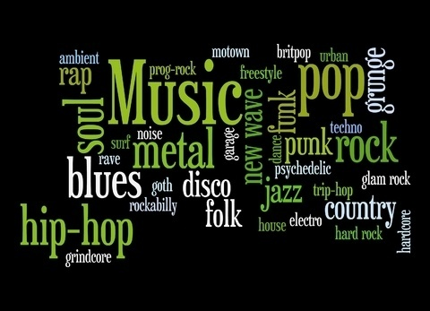

My Music
My Music
Welcome To My Music Genre

Let's know more about music...!
Pop
Pop music is a genre of popular music that originated in its modern form in the United State and United Kingdom during the mid-1950's.'Pop Music' is a short of 'Popular Music'.
Classical
Classical music is art music produced or rooted in the traditions of Western music , including both liturgical and secular music. Its also refer to the period from 1750 to 1820.
JazzJazz is a music genre that originated in Africans-American communities of New Orleans, United States, in the late 19th and early 20th centuries and developed from roots in blues and ragtime.